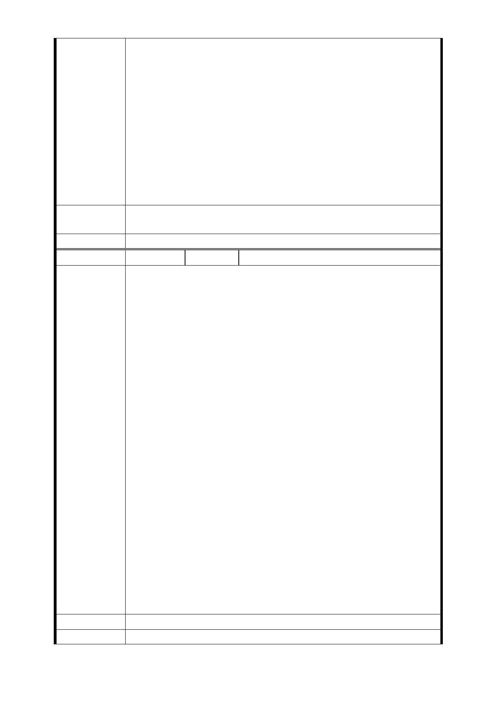

物之興建工程時，
（一）應依據原本計畫，將本旅店所在之『捷四土地』與『南
門市場用地』一併改建，改建年限回復為 2－3 年，以減少本
旅店之營業損失，始符合行政行為不得隨意差別待遇原則；
（二）應分配具有獨立出入口之連續五層樓建物空間給本旅
店，並讓本旅店得參與興建工程之規劃及相關執行，使本旅
店所受分配之建物空間在改建時，即得依據消防安全及旅館
業等法令規定，設置合法規格之旅館設備及措施，以利本旅
店未來得順利回復營業；
（三）就本旅店因本案執行所受之拆遷損失、營業損失等損
害，因與一般住戶、店鋪戶不同，請求以專案個別處理。
市府回應
意見
同編號捷四-2 回應意見。
委員會決議 同編號交一－1 委員會決議。
編 號 捷四-12A 陳情人 陳○枚（103.9.25）
揭發捷運局將市場攤販安置在私有土地的不合理也違法的舉
動
103年3月以後的方案大轉彎（1）是欲假借捷連公共建設之明
目，強行徵收私人產業（此私人產業或與捷連建設用地無絕
對必需之使用時）～僅為公共市埸攤販之暫行安排而欲行使
公權時，恐有擴權/越權圖利於特定少數利益人仕之嫌。（2）
公共市埸攤販之貢獻社會與本私人企業對社會之貢獻度於本
質上並無差別同時都交稅政府，同樣均受憲法保障。
此案攤商有暫時營運埸所能過渡時，依據平等比較原則，政
府是必也為雲鼎旅店尋找相對適當埸所～如不然也將賠償所
有營運損失至能完全復業止。政府為其公有產業欲以公權力
陳 情 理 由 之行使而徹底犧牲民營企業之生存及財產權，恐已不符現代
政府不得與民爭利之憲法民主精神，尤其是在所有管理部門
尚未對此案定論前，南門市埸管委會已自行公示於媒體新聞
大眾，足見本案早由少數特權人士把持，暗箱操作。（3）政
府政策朝令夕改在103年3月前，102、101、100 年開的公聽
會及新聞媒體發佈的方案與本次提案完全是政策大轉彎，先
前改建南門市場在花了1 億多民脂民膏不足1年半後，如今又
要完全敲掉，再次提出此勞民傷財，欺壓百姓賴以謀生私人
產業及經營處所，對政府有關當局此種兒戲公共建設思維與
管理，浪費公款，欺壓百姓，玩法而圖利少數人行徑，無法
認同，敬請法務公檢調相關部門，本勿枉勿縱精神，歸還平
民百姓足以安居樂業靜土，主動調查…
建議辦法
市 府 回 應 同編號捷四-10 回應意見。
- 46 -